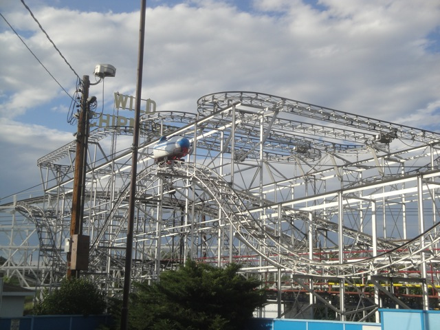
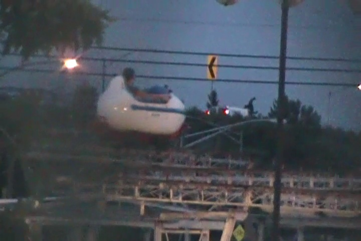
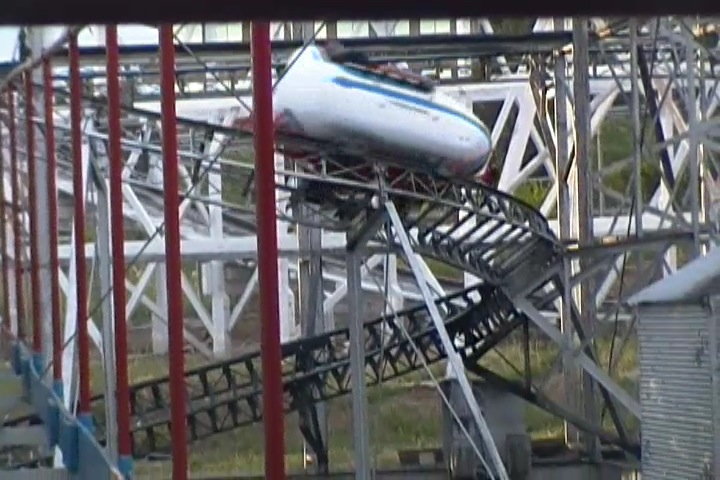
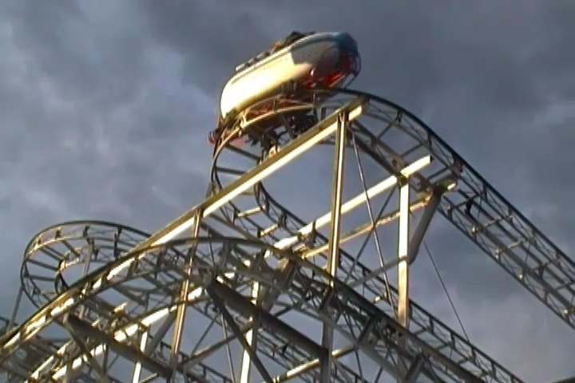
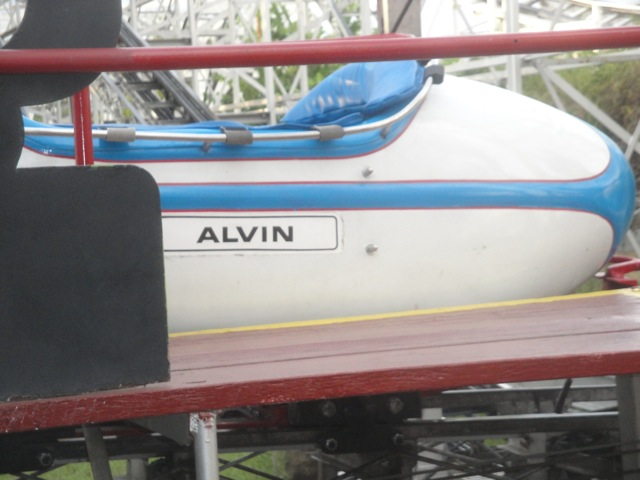
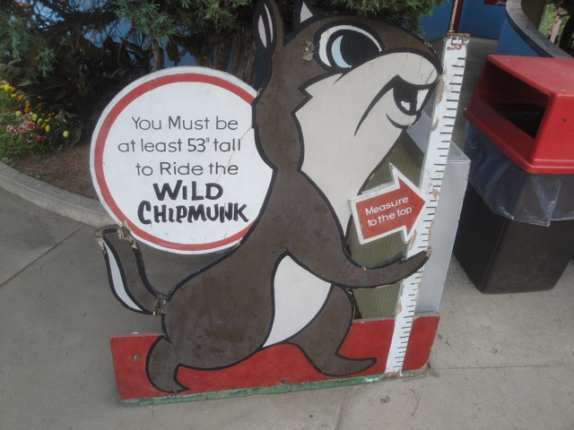

| |
Wild Chipmunk Review

For this review, we're here at Lakeside Park and we're reviewing their Wild Mouse, Wild Chipmunk. Now this may look like a crappy old coaster and wouldn't be nearly as good as all the modern Wild Mouse coasters that are being built today. But in all honesty, this is my favorite Wild Mouse. It's better than the crazy one at Lagoon and all the brutal Mice in Europe. It's just a ton of fun. Anyways, you get in the car, and yeah. That's it. You're just riding in a bathtub on this ride. I don't think there are any restraints. If there are, it's just a lousy seatbelt that I forgot about. So yeah. You're just riding around in this bathtub filled with padding. Yeah. This is going to be quite an interesting. We then go around a tight turn, and head up the lifthill. You get a pretty good view of what you're about to go through when we suddenly reach the top. We then make a quick left turn, get a decent view of the lake that makes Lakeside Park "Lakeside Park". And then we go through another sharp left turn that leads us into some straight track. All right. Its nice and...BAM!!! SHARP TURN!!! And at this point, we're in your typical switchbacks, like you normally see on a wild mouse. We go through a little straight track (And I mean a little. There's barely any straight track here), get a nice view of Lakeside Park, and then...BAM!!! Sharp Turn!!! Now these sharp turns actually feel different from most wild mouse coasters due to the cars they use on Wild Chipmunk. These cars feel more like they're going to tip over more due to their design than typical Wild Mouse cars, and that just makes it all the more fun. Oh, and did I mention that you're just sitting in these cars holding on? No restraints. =) Now its just the same old straight track, sharp turn, etc. But after one of the peices of straight track, we make a sharp 90 degree turn, go down a small dip before going down a decent sized drop. We then head up a small hill that of course leads straight to another sharp turn. This of course leads to some straight track, a small turn before dipping back down. We then go through a small bunny hop. Its not intense or anything, but hey. Its fun. We then rise up another small hill and go through a small turn and some straight track. We then go through a small turn and down a small drop. WEE!!! We then go up a small bunny hop. It is particuarly fun since it has a great headchopper effect with the ride up above. We then go through another turn, and head down a small downward helix. This little sucker is MEAN and AGRESSIVE here. And I like that. I really like that. And then we glide into the final brakes. Wild Chipmunk is a very fun coaster and one of the best Wild Mouse coasters out there. It's a shame that there are so few Wild Mice like this out there in the world, because this is a really fun ride. I know it's not saying much, but its the best coaster in the state of Colorado (provided that Half Pipe is closed). Do not miss out on Wild Chipmunk when visiting Lakeside Park.
7/10
Location: Lakeside Park
Opened: 1955
Built by: Miler Coasters
Last Ridden: July 24, 2013
Wild Chipmunk Photos





Home
|